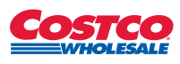

Ranglister Forbrug: fødevarer, drikke & restauranter Costco

Costco
66
15070100
Et blik på de samme fund, ikke en ny score. Sådan virker det
En god forretning med et reelt spørgsmålstegn: prisen, en revne eller begge dele.
Største fradrag
- Multipler mod egen historik og peers−17
- Vækstens kvalitet−2
- Retssager om toldrefusion−2
Styrker
- Nettokasse+2
- Prisstyrke og spredt kundebase+2
- Udbytte fra FCF+1
Sådan er scoren bygget op
Fra 100 til 66, trin for trin: point trækkes fra for forretningen, prisen og revnerne, lægges til for dokumenterede styrker, og så følger tre datajusteringer.
Start
Score
Hold musen over et trin eller vælg det for at se, hvad der drev det. Trin med fund åbner dem nedenfor.
Nøgletal
Pr. 6 nov. 2026. Analytikernes kursmål er ofte optimistiske; læs opsiden som et fingerpeg, ikke en prognose.
- Pris
- 1,054 USD
- Analytikernes mediankursmål
- 1,082 USD
- Opside til median
- +2.7%
- Analytikere
- 41
- Kursmålsinterval
- 770.00 – 1,315 USD
- 52-ugers ændring
- +13%
- P/E (historisk)
- 50.8
- Forward P/E
- 46.1
- PEG
- 4.29
Fund
Hvert fradrag og hvert plus med sin kilde. Åbn et trin for at læse dem.
Forretning
Bliver virksomheden stærkere, ikke bare større? · 1 fund−2 af −30
- −2Vækstens kvalitetQ4 FY2026: sammenlignelig vækst 9,4 %, men kun 6,7 % uden benzinpriser og valuta. Medlemsgebyrerne voksede 7,3 %, og effekten af gebyrforhøjelsen fra september 2024 er ved at være udløbet. Den underliggende vækst er solid, men lavere end overskrifterne. ROIC er steget fra 31 % til 37 %, og driftsmarginen fra 3,5 % til 3,8 %, så forretningen bliver stærkere.
Pris
Dagens multipler mod selskabets egen historik og dets sammenlignelige selskaber. · 1 fund−17 af −35
- −17Multipler mod egen historik og peersTrailing P/E 47,1 (47,5 renset for toldrefusionen) mod et 10-års snit på ca. 39 ifølge fullratio, altså ca. 20 % over. Forward P/E 42,9 mod 35,3–52,0 i FY2022–26. EV/EBITDA 29,8 mod 22,4–34,2 og P/FCF 46,2. Med forward EPS-vækst på ca. 10–11 % betaler man omkring fire gange væksten. Detailhandelspeers (Ahold, BJ's) handler til en brøkdel; kun Walmart er i nærheden. Prisen forudsætter fejlfri eksekvering i mange år.
Revner
Cash flow, kunder, gæld, insidere, guidance og det, der ligger bag hovedtallene. · 2 fund−3 af −35
- −2Retssager om toldrefusionEfter at Højesteret underkendte IEEPA-tolden, blev der i marts 2026 anlagt fire gruppesøgsmål. De kræver, at Costco sender refusionen (anslået over 1 mia. $) videre til medlemmerne, og Costco vil have dem afvist. Ledelsen siger, at pengene går til lavere priser; det fjerner gevinsten, men ikke sagsrisikoen.
- −1KundeadfærdFornyelsesraten i USA/Canada er gledet fra 93,0 % (Q2 FY2025) til 92,1–92,3 %, og den globale rate er 89,8 %. Ledelsen forklarer det med en større andel online-tilmeldte, som fornyer sjældnere. Faldet er lille, men det er den vigtigste nøgletalsserie i modellen.
Plus
Kun dokumenterede styrker. · 3 fund+5 af +15
- +2NettokasseKassen er 21,3 mia. $ og gælden 10,2 mia. $, altså 11,1 mia. $ i nettokasse. Selv efter fradrag af forudbetalte medlemsgebyrer (anslået ca. 3 mia. $) er der en klar nettokasse, og rentedækningen er 79 gange.
- +2Prisstyrke og spredt kundebase150,4 mio. kortholdere og en global fornyelsesrate på 89,8 %, selv efter gebyrforhøjelsen i 2024. Digitalt salg voksede 19,5 % i Q4, og medlemsgebyrerne er en tilbagevendende indtægt uden kundekoncentration.
- +1Udbytte fra FCFUdbyttet på 2,5 mia. $ i FY2026 er dækket af FCF på 9,4 mia. $ (efter capex på 6,4 mia. $), og udbyttet er hævet 21 år i træk (+12,6 %). Aktietallet er stabilt.
Forbehold
Det, scoren ikke fanger, eller hvor dataene er svage.
Prisen er hele historien: P/E 47 for 10–11 % EPS-vækst. Selv en fejlfri drift kan give et dårligt afkast, hvis multiplen nærmer sig 10-års snittet (ca. 39). FY2026-EPS indeholder en engangsgevinst på 0,15 $ fra tilbagebetalt IEEPA-told; det er renset, men har lille betydning. Nettokassen er ikke præcist renset for forudbetalte medlemsgebyrer (anslået ca. 3 mia. $). Insidersalg er ikke verificeret mod Form 4 og er derfor ikke scoret. Kursen ligger 1 % over 200-dages snittet.
Også i Forbrug: fødevarer, drikke & restauranter
De højeste scorer i samme branche.